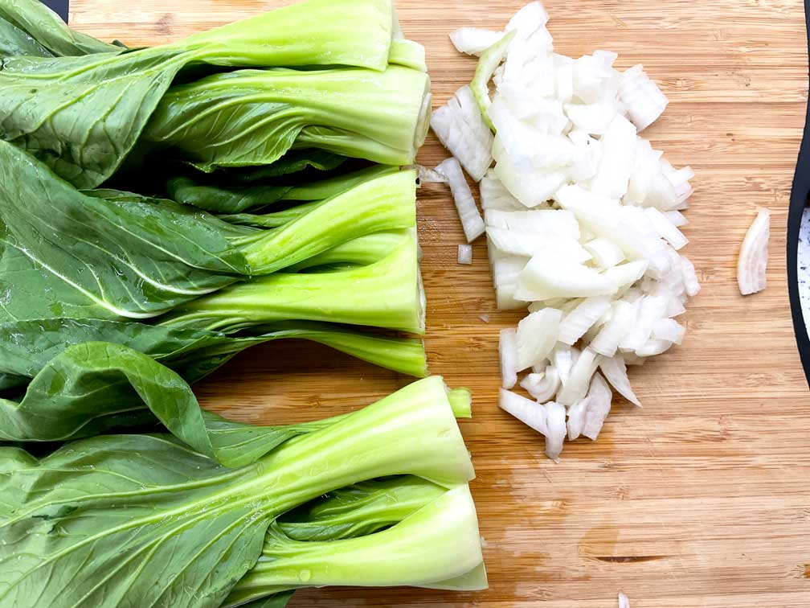
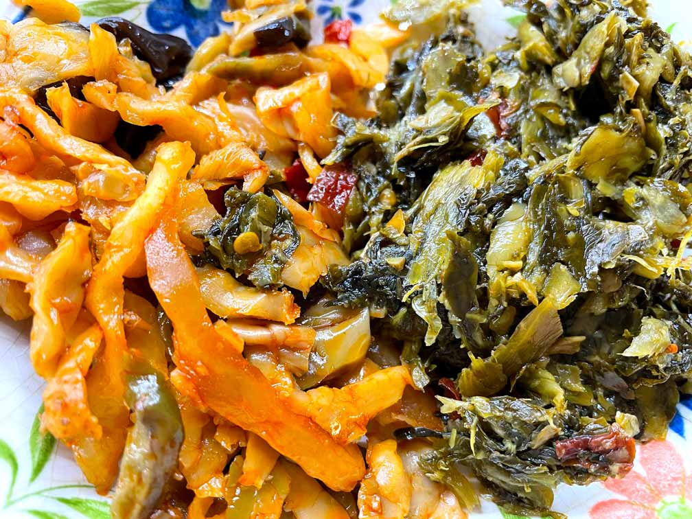
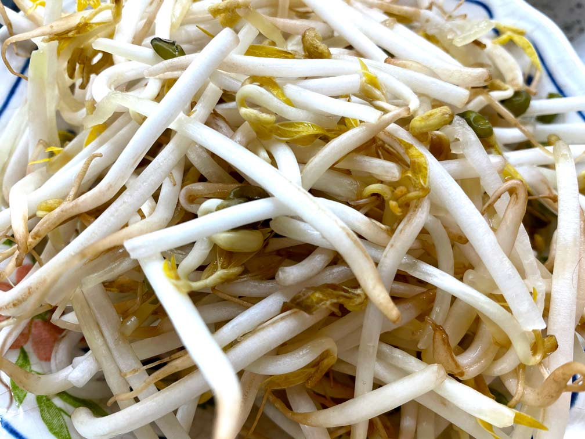
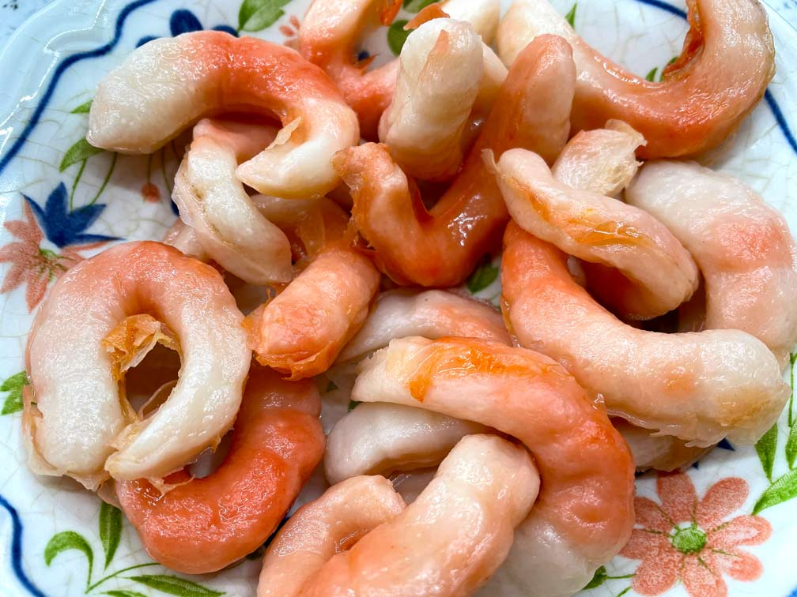
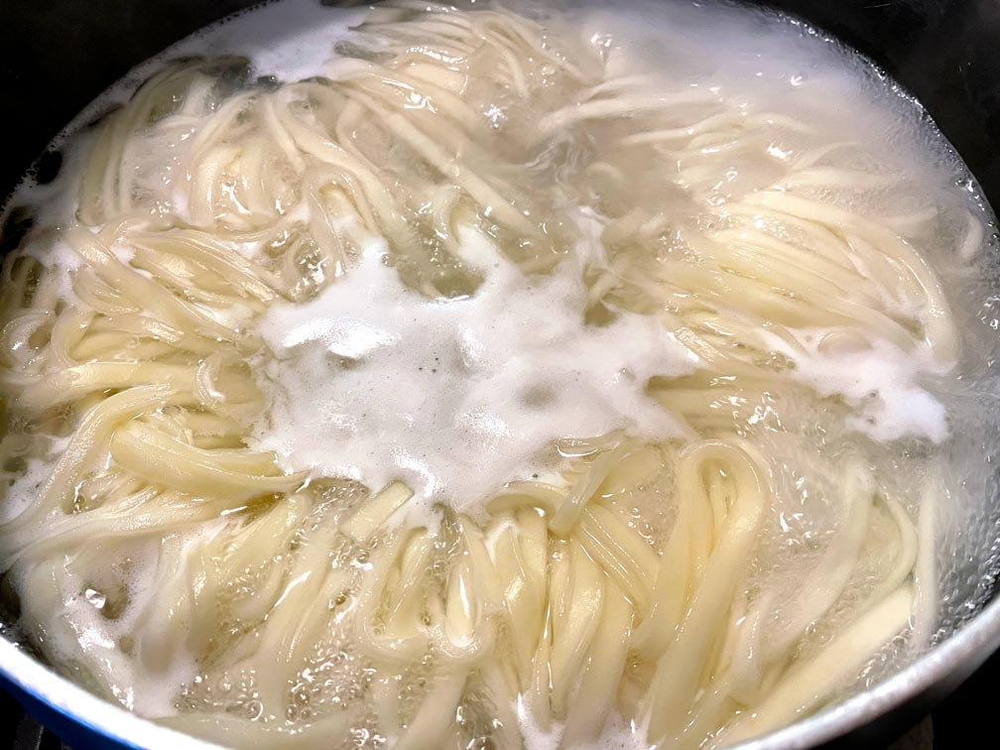
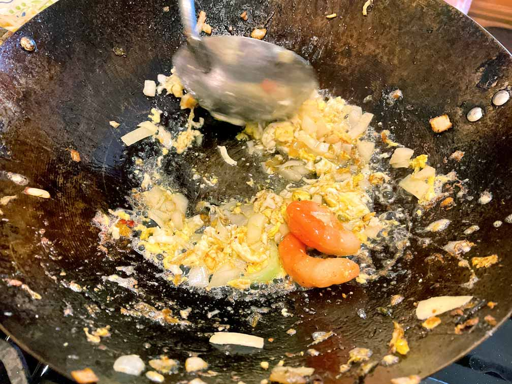
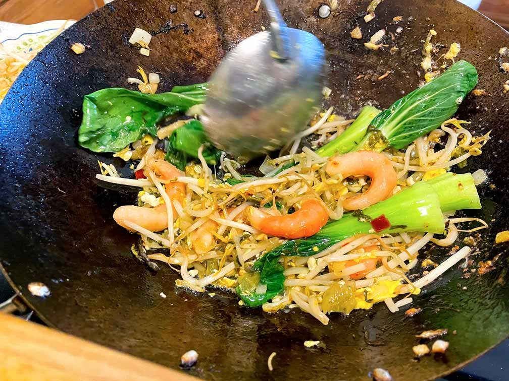

<!DOCTYPE html>
<html lang="en-US">
  <head>
    <title>Shanghai Street Noods</title>
    <!-- to avoid weired symbols -->
    <meta charset="utf-8"/>
    <!-- responsive -->
    <meta name="viewport" content="width=device-width, initial-scale=1.0"/>
    <meta http-equiv="X-UA-Compatible" content="IE=edge,chrome=1"/>
    <meta name="HandheldFriendly" content="true"/>

    <!-- manifest -->
    <link rel="manifest" href="../manifest.json" crossorigin="use-credentials">

    <!-- google metatags -->
    <meta name="description" content="Shanghai Street Noods" />

    <!-- facebook metatags -->
    <meta property="og:url" content="hungry-vegetarian.com/street-noods" />
    <meta property="og:type" content="article" />
    <meta property="og:title" content="Shanghai Street Noods" />
    <meta property="og:description" content="Shanghai street noodles have a very special place in my heart. My love for it is unconditional, even if I spent long hours in the bathroom the next day. There's nothing that can beat the best food in the world. It is our humble attempt to bring Shanghai Street Noodles to life on the opposite side of the world. " />
    <meta property="og:image" content="images/street-noods/img/fried-noods.jpg" />
    <meta property="fb:app_id" content="511634172766587" />

    <!-- LinkedIn metatags -->
    <meta property='og:title' content="Shanghai Street Noods"/>
    <meta property='og:image' content="images/street-noods/img/fried-noods.jpg"/>
    <meta property='og:description' content="Shanghai street noodles have a very special place in my heart. My love for it is unconditional, even if I spent long hours in the bathroom the next day. There's nothing that can beat the best food in the world. It is our humble attempt to bring Shanghai Street Noodles to life on the opposite side of the world. "/>
    <meta property='og:url' content="hungry-vegetarian.com/street-noods" />

    <!-- pintrest metatags -->
    <meta property="og:site_name" content="hungry-vegetarian.com/street-noods" />

    <!--  favicon -->
    <link rel="apple-touch-icon" sizes="180x180" href="../images/favicon_package_v0.16/apple-touch-icon.png">
    <link rel="icon" type="image/png" sizes="32x32" href="../images/favicon_package_v0.16/favicon-32x32.png">
    <link rel="icon" type="image/png" sizes="16x16" href="../images/favicon_package_v0.16/favicon-16x16.png">
    <link rel="manifest" href="../images/site.webmanifest">
    <link rel="mask-icon" href="../images/safari-pinned-tab.svg" color="#5bbad5">
    <meta name="msapplication-TileColor" content="#da532c">
    <meta name="theme-color" content="#ffffff">

    <!-- css -->
    <link rel="stylesheet" href="styles/style.css">
    <link rel="stylesheet" href="styles/recipe.css">
    <link rel="stylesheet" href="images/street-noods/parallax.css">
    <link rel="stylesheet" href="styles/share.css">

    <!-- font-awesome -->
    <link href="https://use.fontawesome.com/releases/v5.6.1/css/all.css" rel="stylesheet">
  
    <!-- bootstrap css-->
    <link href="https://cdn.jsdelivr.net/npm/bootstrap@5.1.3/dist/css/bootstrap.min.css" rel="stylesheet" integrity="sha384-1BmE4kWBq78iYhFldvKuhfTAU6auU8tT94WrHftjDbrCEXSU1oBoqyl2QvZ6jIW3" crossorigin="anonymous">
    <!-- bootstrap js-->
    <script src="https://cdn.jsdelivr.net/npm/bootstrap@5.1.3/dist/js/bootstrap.bundle.min.js" integrity="sha384-ka7Sk0Gln4gmtz2MlQnikT1wXgYsOg+OMhuP+IlRH9sENBO0LRn5q+8nbTov4+1p" crossorigin="anonymous"></script>

    <!-- google fonts -->
    <link rel="preconnect" href="https://fonts.googleapis.com"><link rel="preconnect" href="https://fonts.gstatic.com" crossorigin><link href="https://fonts.googleapis.com/css2?family=Annie+Use+Your+Telescope&display=swap" rel="stylesheet">
    <link rel="preconnect" href="https://fonts.googleapis.com"><link rel="preconnect" href="https://fonts.gstatic.com" crossorigin><link href="https://fonts.googleapis.com/css2?family=Cabin+Sketch:wght@400;700&display=swap" rel="stylesheet">
    <link rel="preconnect" href="https://fonts.googleapis.com"><link rel="preconnect" href="https://fonts.gstatic.com" crossorigin><link href="https://fonts.googleapis.com/css2?family=Raleway:wght@100;200;300;400;600&display=swap" rel="stylesheet">
    <script src="https://cdn.jsdelivr.net/npm/vue@2/dist/vue.js"></script>
  
    <!-- Global site tag (gtag.js) - Google Analytics -->
    <script async src="https://www.googletagmanager.com/gtag/js?id=UA-188818029-3"></script>
    <script>
      window.dataLayer = window.dataLayer || [];
      function gtag(){dataLayer.push(arguments);}
      gtag('js', new Date());

      gtag('config', 'UA-188818029-3');
    </script>

    <!-- For reusable components-->
     <script src="https://cdnjs.cloudflare.com/ajax/libs/jquery/2.2.2/jquery.min.js"></script>
    <script> 
      $(function(){
        $(".header").load("../header.html"); 
        $(".footer").load("../footer.html"); 
      });
    </script> 
  </head>
  <body>
    <div class="header"></div>
      <div class="parallax">
        <a href="https://www.pinterest.com/pin/create/button/" data-pin-do="buttonBookmark"> </a>
        <div class="banner-text">
          <h2 class="recipe-name">Shanghai Street Noods</h2>
          <p class="tagline">Shanghai street noodles have a very special place in my heart. My love for it is unconditional, even if I spent long hours in the bathroom the next day. There's nothing that can beat the best food in the world. It is our humble attempt to bring Shanghai Street Noodles to life on the opposite side of the world. 
          </p>
        </div>
      </div>
      <div class="btn_wrap"> 
        <span>Share recipe</span>
          <div class="sliding-share">
            <a href="http://www.facebook.com/sharer.php?u=hungry-vegetarian.com/street-noods" class="share" target="_blank"><i class="fab fa-facebook-f"></i></a>
            <a href="https://twitter.com/share?url=hungry-vegetarian.com/street-noods&amp;text=Shanghai street noodles have a very special place in my heart. There's nothing that can beat the best food in the world. It is our humble attempt to bring Shanghai Street Noodles to life on the opposite side of the world." class="share" target="_blank"><i class="fab fa-twitter"></i></a>
            <a href="https://www.linkedin.com/sharing/share-offsite/?url=https://hungry-vegetarian.com/street-noods.html" class="share" target="_blank"><i class="fab fa-linkedin"></i></a>
          </div>
      </div>
      <div class="recipe-itself">
        <p class="ingredients">
          <b>Ingredients for one bowl:</b><br><br>
          1/4 of Onion<br>
          1 egg<br>
          Handfull of Bok Choy leaves<br>
          A bowl of Mung Bean Sprouts<br>
          A pinch of Pickled Mustard Greens<br>
          A pinch  of Pickled Bamboo  Shoot Slices<br>
          A bowl of cooked Egg Noodles<br>
          1/4 of ladle of Soy Sauce<br> 
          1/5 a teaspoon Sambal Oelek sauce<br> 
          Garlic Powder<br>
          Vegetable oil<br>
          <br>
          <b>Add to your bowl:</b> Green onions<br>
        </p>
        <div class="container">
          <div class="step">
                <div class="recipe-img">
                  <div id="carouselExampleControls" class="carousel slide" data-bs-ride="carousel" data-bs-interval="false">
                    <div class="carousel-inner">
                      <div class="carousel-item active">
                        
                      </div>
                      <div class="carousel-item">
                        
                      </div>
                      <div class="carousel-item">
                        
                      </div>
                      <div class="carousel-item">
                        
                      </div>
                      <button class="carousel-control-prev" type="button" data-bs-target="#carouselExampleControls" data-bs-slide="prev">
                        <span class="carousel-control-prev-icon" aria-hidden="true"></span>
                        <span class="visually-hidden">Previous</span>
                      </button>
                      <button class="carousel-control-next" type="button" data-bs-target="#carouselExampleControls" data-bs-slide="next">
                        <span class="carousel-control-next-icon" aria-hidden="true"></span>
                        <span class="visually-hidden">Next</span>
                      </button>
                    </div>
                  </div>
                </div>
                <div class="box-howto">
                  <p class="howto">
                     You want to cut Bok Choy's bottom to have separate leaves. Dice your onion. If you scroll through pictures, you can see how Pickled Mustard Greens,  Pickled Bamboo Shoot Slices, Mung Bean Sprouts, and Vegan Prawns look. Well, I regret adding those Vegan Prawns. They didn't taste good. However, you might find good ones. 
                  </p>
                </div>
              </div>
              <div class="step">
                <div class="recipe-img">
                    
                </div>
                <div class="box-howto">
                  <p class="howto">
                     You want to cook your noodles before you start frying the ingredients. Follow the instructions on the box. It's better to get egg noodles, but you can get any other ones too. Don't salt it.
                  </p>
                </div>
              </div>
              <div class="step">
                <div class="recipe-img">
                  
                </div>
                <div class="box-howto">
                  <p class="howto">
                     The best pen to cook in is the wok. Add vegetable oil and heat the wok very hot. Break an egg and stir it. Add some onion. Stir it together. If you want to add some plant-based meat or plant-based prawns now is the best time. All ingredients should turn brownish before you add other ingredients.
                  </p>
                </div>
              </div>
              <div class="step">
              <div class="recipe-img">
                <div id="carouselExampleControls-1" class="carousel slide" data-bs-ride="carousel" data-bs-interval="false">
                  <div class="carousel-inner">
                    <div class="carousel-item active">
                      
                    </div>
                    <div class="carousel-item">
                      
                    </div>
                    <button class="carousel-control-prev" type="button" data-bs-target="#carouselExampleControls-1" data-bs-slide="prev">
                      <span class="carousel-control-prev-icon" aria-hidden="true"></span>
                      <span class="visually-hidden">Previous</span>
                    </button>
                    <button class="carousel-control-next" type="button" data-bs-target="#carouselExampleControls-1" data-bs-slide="next">
                      <span class="carousel-control-next-icon" aria-hidden="true"></span>
                      <span class="visually-hidden">Next</span>
                    </button>
                  </div>
                </div>
              </div>
              <div class="box-howto">
                <p class="howto">
                   Throw pickles and the rest of the vegetables in the wok. Stir until they look soft. Add noodles into the vegetables. Continue stirring. Add soy sauce, garlic powder and Sambal Oelek sauce.
                </p>
              </div>
            </div>
            <div class="step">
              <div class="recipe-img">
                
              </div>
              <div class="box-howto">
                <p class="howto">
                   Add on top of your noodles chopped up green onions. It turned out really good.
                </p>
              </div>
            </div>
        </div>
      <div class="parallax-end">
        <h2 class="recipe-name">Enjoy</h2>
      </div>
     <div class="footer"></div>
    <script type="text/javascript" async defer src="//assets.pinterest.com/js/pinit.js"></script>
  </body>
</html>
